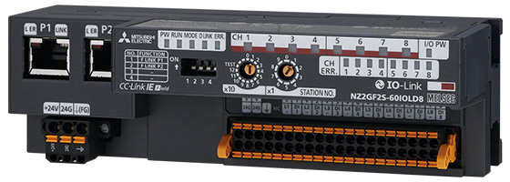
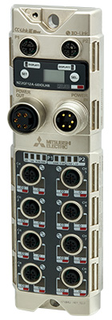

Network-related products |
Programmable Controllers MELSEC
CC-Link IE Line Up

Remote IO-Link Modules
CC-Link IE Field Network remote IO-Link modules
- Support CC-Link IE Field Network
- Control IO-Link standard devices as the IO-Link master module
- Water proof types do not require a control panel, saving on hardware cost and space
Spring-clamp terminal block type

| Model | Number of IO-Link channels | Rated load voltage/ Rated load current (L+)*1 |
Transmission speed*2 | IO-Link compatible protocol |
Waterproof (IP67) |
|---|---|---|---|---|---|
| NZ2GF2S-60IOLD8 | 8 ch | 24 V DC (1.6 A) | 4.8 kbaud (COM1) 38.4 kbaud (COM2) 230.4 kbaud (COM3) |
V1.1.2 | - |
Waterproof connector

| Model | Number of IO-Link channels | Rated load voltage/ Max. load current (L+)*1 |
Transmission speed*2 | IO-Link compatible protocol |
Waterproof (IP67) |
|---|---|---|---|---|---|
| NZ2GF12A-60IOLH8 | 8 ch | 24 V DC (1.3 A/channel, 9 A/common) |
4.8 kbaud (COM1) 38.4 kbaud (COM2) 230.4 kbaud (COM3) |
V1.1.2 | ● |
- *1.Power supply line to IO-Link device.
- *2.Transmission speed differs according to the connected IO-Link device.